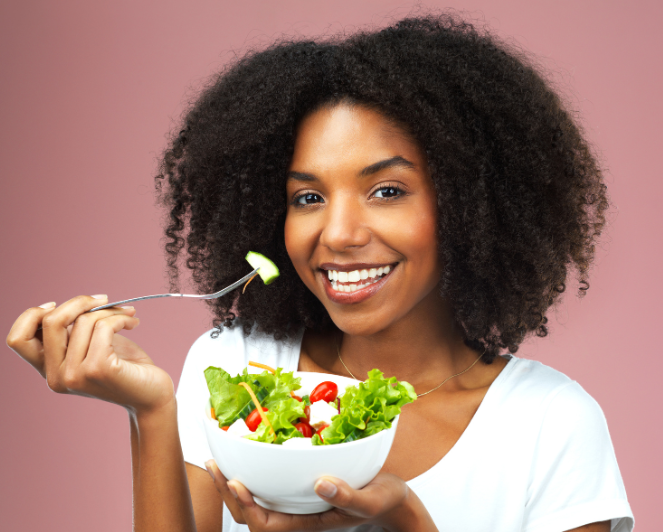

FRUTAS E VERDURAS

Ricas em fibras, vitaminas e minerais, as frutas e verduras ajudam a fortalecer o sistema imunológico, melhorar a digestão e manter a pele saudável. Além disso, elas são aliadas no controle do peso e prevenção de doenças crônicas.
A fibra ajuda no bom funcionamento do intestino.
Vitaminas como C e A fortalecem as defesas do corpo.
Antioxidantes presentes ajudam a combater o envelhecimento precoce.
Baixas em calorias, mas ricas em nutrientes e fibras.
Comer frutas e verduras pode ser mais fácil e saboroso do que você imagina! Aqui estão algumas dicas para te ajudar a aumentar o consumo desses alimentos de forma prática e deliciosa.
Adicione saladas variadas no almoço e no jantar.
Frutas frescas ou sucos naturais podem ser uma excelente opção de lanche.
Prepare sopas de legumes nutritivas para refeições quentes e leves.
Experimente diferentes variedades de frutas e verduras para garantir uma gama completa de nutrientes.
voltar para a página onde você pode encontrar outras variedades com relação a almentação saúdavel e seus nutrientes mais inmportantes. Clique no link abaixo e seja direcionado a essa página:
volte para o inicio de toda a página e procure o tema que mais lhe interessa, temos uma quantidade vasta, com temas variados relacionados a saúde e bem-estar. Clique no link abaixo e seja direcionado a essa página:
siga adiante com a próxima página e veja o tema que lhe aguarda relacionado a saúde e bem-estar, mais especificamente, com relação a alimentação. Clique no link abaixo e seja direcionado a essa página: